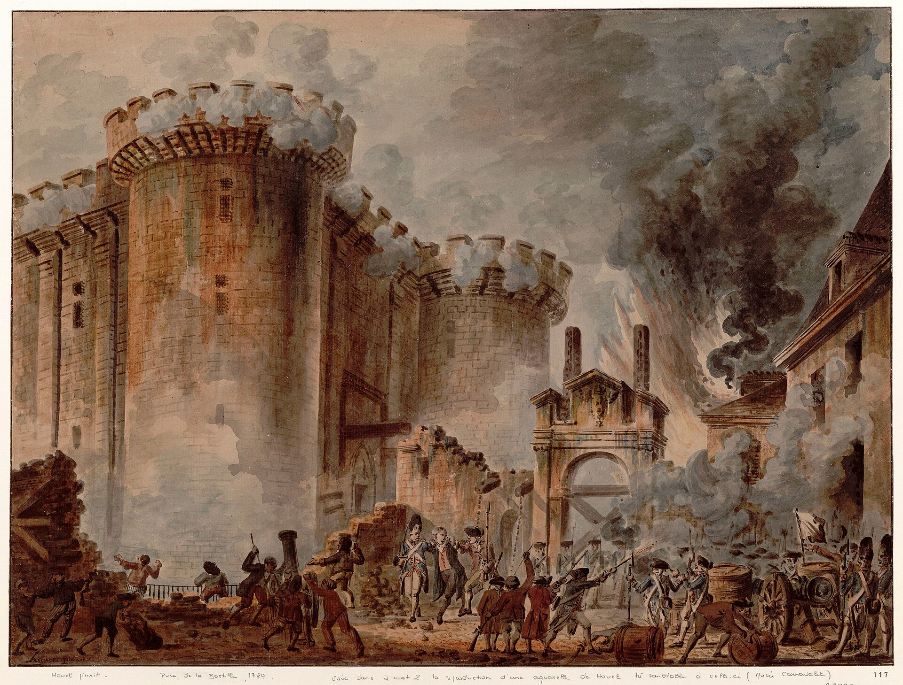

Optima Academy Online
An Education Experience Company
SOCIOLOGY
Quarter / Module
Module 9
Quarter 1 Recap and the Origins of Political Authority
Lesson
Lesson 9.01
Topic
Quarter 1 Recap: From Social Bonds to Social Institutions
Module Theme
Quarter 1 Recap and the Origins of Political Authority
🔊 READ ALOUD — LISTEN TO THIS PAGE
Lesson 9.01
Quarter 1 Recap: From Social Bonds to Social Institutions
Lesson
📖 TODAY'S FOCUS
Eleven thinkers, one question. What did Quarter 1 establish, and what does it leave open?
Aristotle through Putnam, across twenty-three centuries, argued about what holds a person to the people around her and what happens when that hold weakens. Quarter 2 asks who governs the bonds that remain.
🎯 BY THE END OF THIS LESSON YOU WILL BE ABLE TO…
1
I will be able to reconstruct the single question that runs from Aristotle through Putnam, and state where each thinker enters the argument.
2
I will be able to apply a Quarter 1 concept to a scenario I have not seen before, and distinguish it from a near-neighbor concept a careless reader would confuse it with.
3
I will be able to explain what Quarter 2 will add to the framework Quarter 1 has built.
📚 PART 1 · THE QUESTION THAT CONNECTS
THE QUARTER 1 ARC
Four stages, one argument. Quarter 2 opens at the last arrow.
WKS 1–2
Is there a "social" thing to study?
Aristotle says humans need the polis. Hobbes says order needs a sovereign. Locke and Rousseau offer contract and natural goodness.
Four foundations
→
WK 3
Yes. It is a real object.
Durkheim proves social facts exist, external, general, and constraining, using the hardest possible test case.
Sociology's founding claim
→
WK 4
What is it made of, and what does it feel like?
Durkheim explains solidarity structurally. Simmel describes the texture of a mind living inside a modern city.
Structure and experience
→
WKS 5–8
What happens when the old bonds loosen?
Sociological seeing, the family, religion, education, community, and social capital, each traced through history and each showing strain.
Institutions under pressure
→
QUARTER 2
Who holds authority over the bonds that remain?
Government, law, and legitimate authority, then the institutions of modern life.
Institutions, authority, modernity
Almost nobody in this arc disagrees about the facts. They disagree about what the facts mean.
- What is the relationship between the individual and the society that formed her?
- How do social bonds originate, and what are they made of?
- What happens to individuals and communities when those bonds weaken?
- What can sociology, as a discipline, contribute to these questions?
📚 PART 2 · WHO ARGUED WHAT
📚 PART 3 · APPLY THE CONCEPTS
📚 PART 4 · QUARTER 2 BEGINS
FROM QUARTER 1 TO QUARTER 2
QUARTER 1 ESTABLISHED
QUARTER 2 ASKS
Society is a real force that constrains the individual through social facts (Durkheim).
→
Which constraints are authority, power regarded as rightful, and why does that recognition decide whether a government lasts?
Solidarity shifted from likeness to interdependence, and modern life strains the individual (Durkheim, Simmel, Tonnies).
→
How do bureaucracy, the division of labor, and class organize life among strangers?
The intermediate institutions between person and state are weakening (Tocqueville, Nisbet, Putnam).
→
What do the state, the economy, the city, and the media do to community, and what holds it together now?
INSTITUTIONSAUTHORITYMODERNITY

➡️ NEXT
1
Lesson 9.02: Origins of Government and Law
Optima Academy Online · SOCIOLOGY · Module 9 · Student Lesson Page
Lesson 9.01 · Quarter 1 Recap: From Social Bonds to Social Institutions
© Optima Academy Online · An Education Experience Company